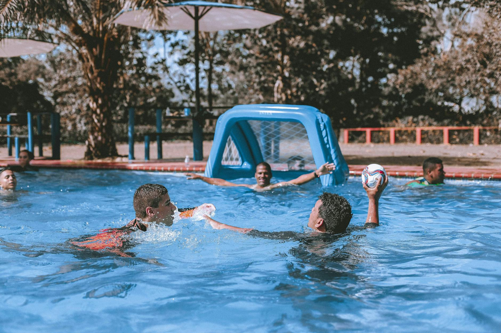
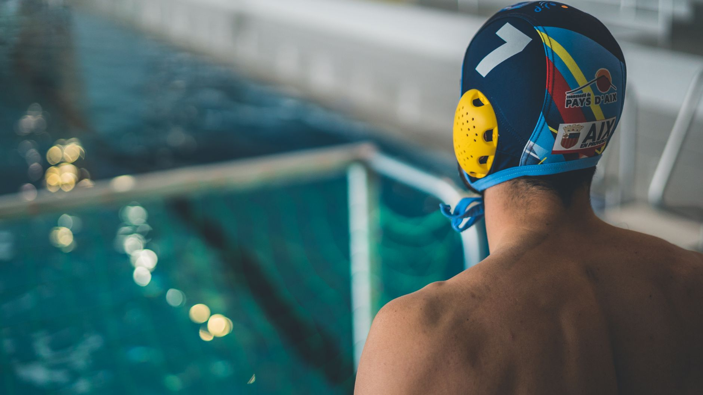
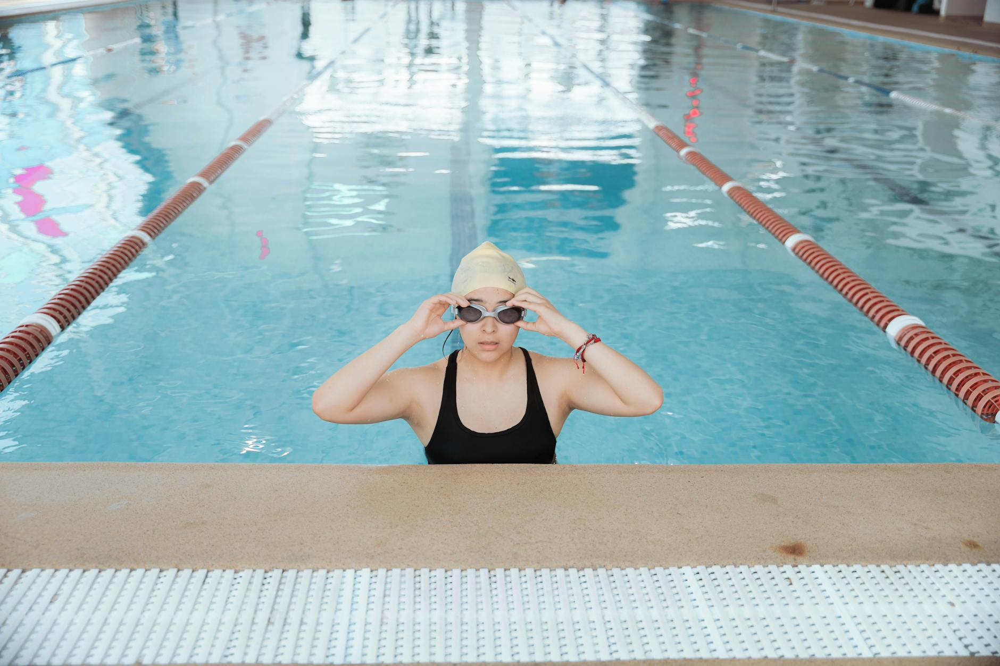
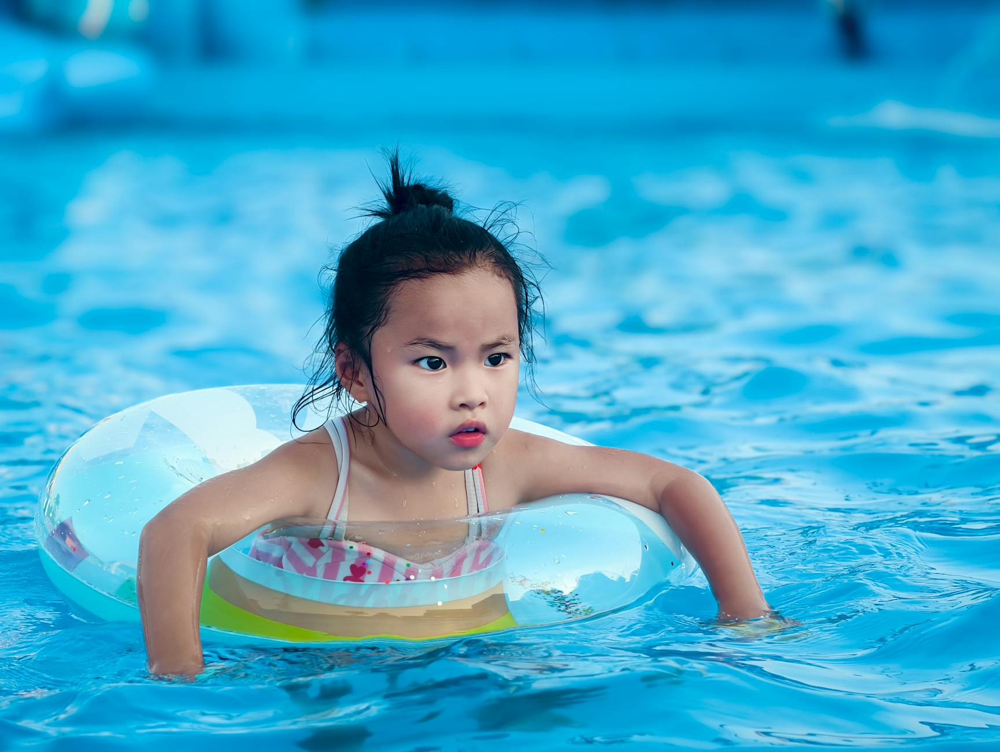
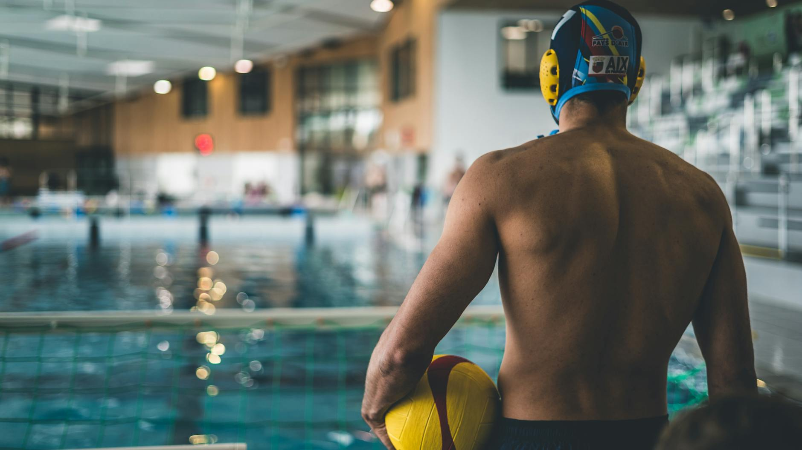
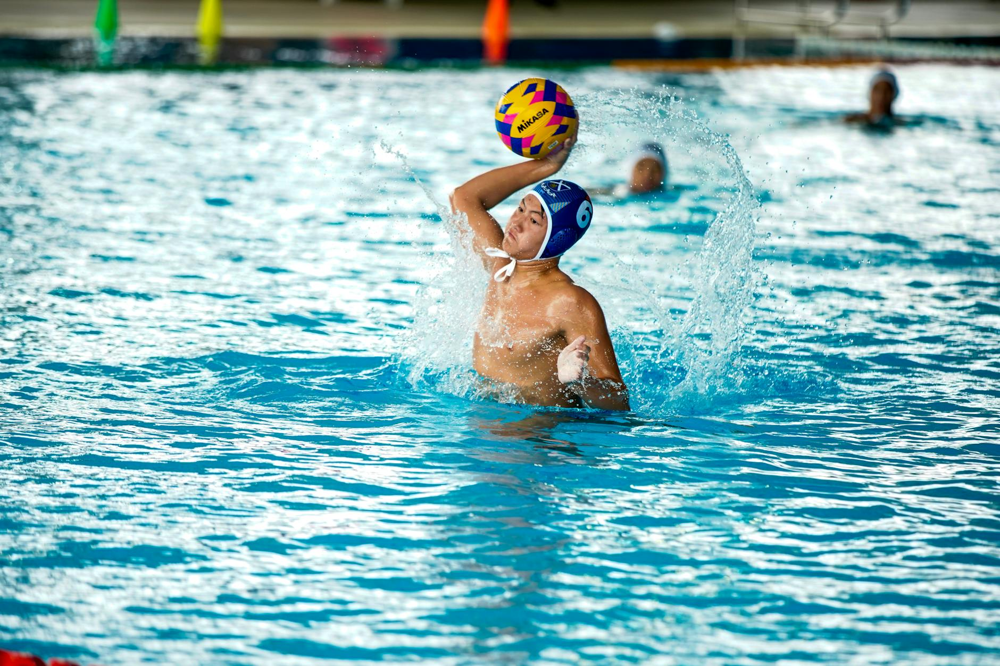

Latest water polo & swimming news, tips, and training guides.

Team USA Men's Water Polo recently announced plans to honor retiring Olympians Alex Obert, Alex Bowen, and Drew Holland during an upcoming homestand. Their remarkable careers offer powerful lessons for young athletes across the Tampa Bay area who are just beginning their own aquatic journeys.
Read More →
USA Water Polo and the Florida High School Athletic Association have officially joined forces to expand water polo across Florida's high schools. For families in the Tampa Bay area, this exciting development opens new doors for young athletes who are ready to take their game to the next level.
Read More →
UC Davis recently welcomed ten new players to its men's water polo program in the 2025 signing class — a reminder that the path from youth aquatics to college rosters is very real. Here's what young athletes and their families in the Tampa Bay area should know about building toward that opportunity.
Read More →
The right pair of swim goggles can make a real difference in your young athlete's comfort, confidence, and performance in the water. Here's what parents and players in the Tampa Bay area need to know before making their next purchase.
Read More →
Florida consistently ranks among the highest states in the nation for child drowning deaths, making water safety education more critical than ever. Here is what Tampa Bay area parents need to know about protecting their children — and how aquatic sports can play a life-saving role.
Read More →The 2026 NCAA Women's Water Polo semifinals between Southern California and UCLA were a masterclass in elite competition. Here's what young athletes in the Tampa Bay area can take away from watching the best in the game.
Read More →
USA Water Polo has partnered with Florida's high school athletic associations to expand the sport across the state. For young athletes in the Tampa Bay area, the timing has never been better to dive in.
Read More →
The USA Women's Water Polo team recently fell to Spain in a dramatic shootout during World Cup Qualification — a result that offers powerful lessons for young athletes. Here's how moments of defeat at the highest level can inspire growth in the pool.
Read More →
A high school boys swim and dive team recently captured a Section 2 Championship title, reminding us what dedicated young athletes can achieve in the water. Here is what parents and swimmers in the Tampa Bay area can learn from their journey.
Read More →Building swimming endurance takes more than just logging yards in the pool — it requires targeted, purposeful training. These five drills give young swimmers the tools to swim stronger, longer, and more efficiently.
Read More →Swimming is one of the few sports that develops the whole athlete — body, mind, and character — from an early age. Learn how time in the water creates habits and confidence that young athletes carry for life.
Read More →